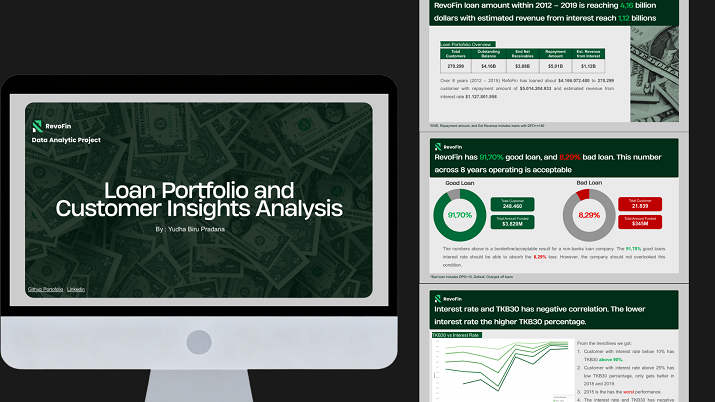

Projects
Loan Portfolio and Customer Insights Analysis (Fintech)

Project Summary
RevoFin is a pioneering fintech company specializing in providing innovative lending solutions to individuals and small businesses through an online platform. The management tasked the data analyst team to revolutionize borrowing by leveraging data-driven insights from eight years of historical loan data to personalize financial products.
The project’s objective is to analyze the loan portfolio, risk assessment, and customer insights to keep the TKB30 stable at a minimum of 98% yearly. By achieving this metric, the company aims to minimize loan risks and ensure the long-term safety and stability of its lending business.
Scope Of Work / Achievement
- Analyzed 270,299 customer records using SQL and Tableau to identify root causes for TKB30 fluctuations across eight years.
- Developed strategic recommendations to stabilize TKB30 at 98% by implementing a 20-30% "Growth Speed-Limit" on rapidly expanding loan categories.
- Evaluated geographic risk to recommend expanding market distribution from one primary state to 5-10 additional states for better business safety.
- Identified negative correlation between interest rates and TKB30, recommending interest adjustments to reduce the 19.42% bad loan peak seen in 2015.
Recommendations
- Analyzed loan portfolio and customer insights using SQL, BigQuery, and Tableau, aiming to maintain TKB30 percentage at a minimum 98% yearly by providing data driven recommendations.
- Recommended prioritizing low-risk customer who qualify for lower interest rates, while conducting thorough checks on payment-to-income ratios for riskier customer to minimize bad loan rates.
- Engineered on implementing a “Growth Speed Limit” strategy once a product category growth exceeds 20-30%, effectively managing risks associated with rapid expansion.
- Diversified the distribution of loans across different states to mitigate concentration risks.
Tools and Method
Tools : SQL, Tableau
Method : Loan Portfolio Analysis, Customer Insights Analysis, Cohort Analysis